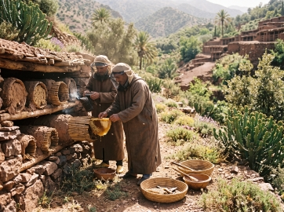
RUCHER TRADITIONNEL
Coopérative Taddart d'Inzerki
Gardienne du plus grand rucher collectif traditionnel en terre et roseau. Récolte saisonnière de miel de thym et de lavande sauvage selon des méthodes séculaires.pml:
Un inventaire vivant dédié à la sauvegarde des savoir-faire ancestraux du Royaume. Nous favorisons le contact humain direct et la transmission pérenne des ateliers régionaux, à l'abri de toute spéculation commerciale ou intermédiaire opaque.
ATELIERS
HOMOLOGUÉS
RÉGIONS
COUVERTES
MAÎTRES
ARTISANS
Récolte respectueuse en ruchers traditionnels, extraction à froid et préservation de la biodiversité florale des montagnes et vallées présahariennes.

Gardienne du plus grand rucher collectif traditionnel en terre et roseau. Récolte saisonnière de miel de thym et de lavande sauvage selon des méthodes séculaires.pml:
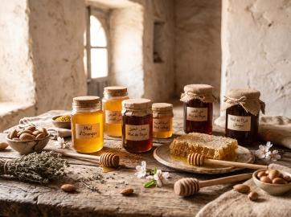
Production de miels rares d'euphorbe (Daghmous), de caroubier et de fleurs d'amandier. Apiculture pastorale valorisant les plantes médicinales de haute montagne.
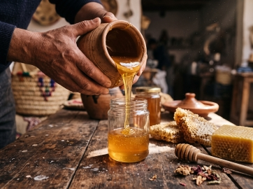
Pressage artisanal des rayons de cire pure et conditionnement à cru sans chauffage pour conserver toutes les vertus thérapeutiques et arômes du nectar.
Symbologie amazighe séculaire, nœuds denses au fil de laine d'alpage vierge et teinture naturelle à base de garance, safran et écorce de grenadier.
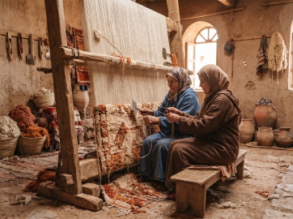
Gardiennes des motifs géométriques du Moyen-Atlas. Tapis Zayane et Hanbel confectionnés entièrement à partir de toisons locales lavées à l’eau
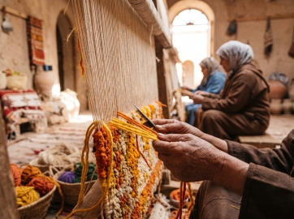
Tissage renommé de l'Anti-Atlas. Les toisons soyeuses de la race locale « Siroua » sont cardées à la main puis filées au fuseau traditionnel avant…
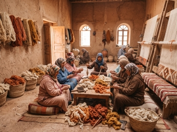
Transmission de l'art du tissage à plat aux abords de la kasbah historique. Utilisation exclusive de fibres naturelles brutes sans solvants ni colorants de…
Concassage ancestral à la pierre, pressage à froid et extraction manuelle préservant l'intégrité biologique de l'arbre endémique de l'arganier.
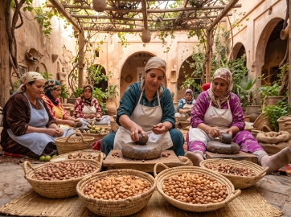
Extraction à froid certifiée par les aînées de la plaine du Souss. Préparation d'huile alimentaire torréfiée au feu de bois et d'huiles de soin…
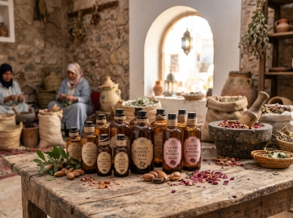
Récolte forestière raisonnée de la forêt littorale d'Essaouira. Savoirs transmis sur la distillation de plantes aromatiques sauvages et la confection de…
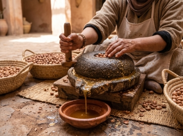
Située au cœur de la Réserve de Biosphère, cette coopérative solidaire assure la préservation écologique des arbres centenaires et produit un…
Argile rouge chamottée de Safi, émaillage bleuté de Fès et poterie modelée aux pigments minéraux du Rif.
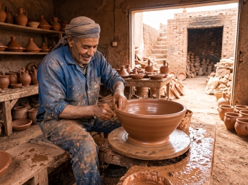
Héritiers des fours séculaires de la colline de Safi. Création de pièces tournées à la main, séchées au grand air de l'Atlantique et cuites selon les courbes
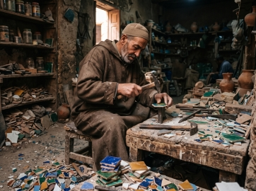
Haute précision de la taille géométrique au manqach. Assemblage inversé selon les règles de composition hispano-mauresque pour fontaines,…
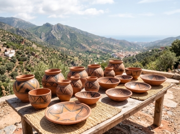
Poterie modelée au colombin sans tour par les femmes des montagnes du Rif. Cuisson ancestrale à feu ouvert et décorations au jus d'écorce de…
Peaux tannées aux écorces et fientes de pigeon dans les cuves médiévales de Chouara, et marqueterie fine en loupe de thuya odorante et bois de citronnier.
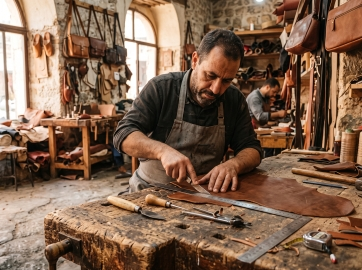
Cuirs souples façonnés selon les méthodes des tanneurs de Chouara. Confection d’articles de sellerie, babouches citadines et sacs cousus au fil de
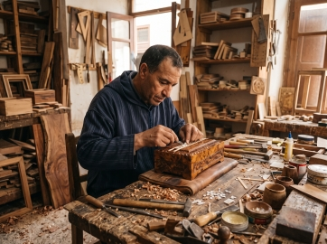
Spécialistes de la racine noueuse du Tetraclinis articulata. Polissage naturel à la cire d’abeille vierge mettant en exergue les nœuds dorés et l’effluve…
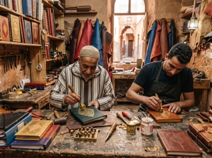
Restauration du geste de la dorure à chaud au fer et du gaufrage sur cuir de chèvre. Valorisation des finitions brutes et souplesse exceptionnelle des…
Feuilles de palmier dattier, fibres de doum et roseau sauvage des vallées présahariennes tressés à sec ou humidifiés selon la saison.
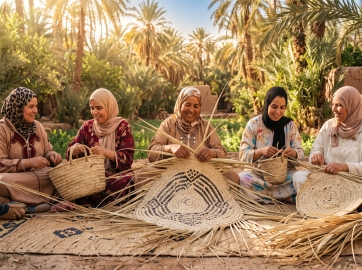
Mise en valeur durable des sous-produits de l’oasis. Les palmes tombées sont refendues à l’ongle puis entrelacées en paniers robustes, nattes de sol et…
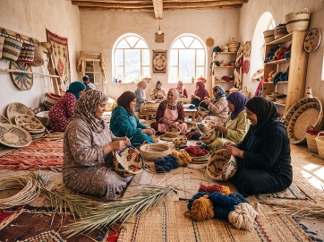
Tressage fin de la fibre d'alfa montagnarde et du palmier nain. Des créations durables et souples qui réemploient les végétaux spontanés des plateaux…
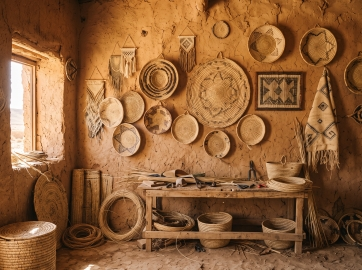
Préservation de la sparterie nomade. Joncs séchés au soleil saharien et tressés serrés pour assurer imperméabilité et fraîcheur aux récipients de…
Déposez la candidature de votre atelier pour figurer dans notre registre patrimonial officiel. Le référencement sur Taawon est gratuit, sans commission commerciale, et conçu pour valoriser votre statut de maître artisan auprès des passionnés et des institutions du monde entier.